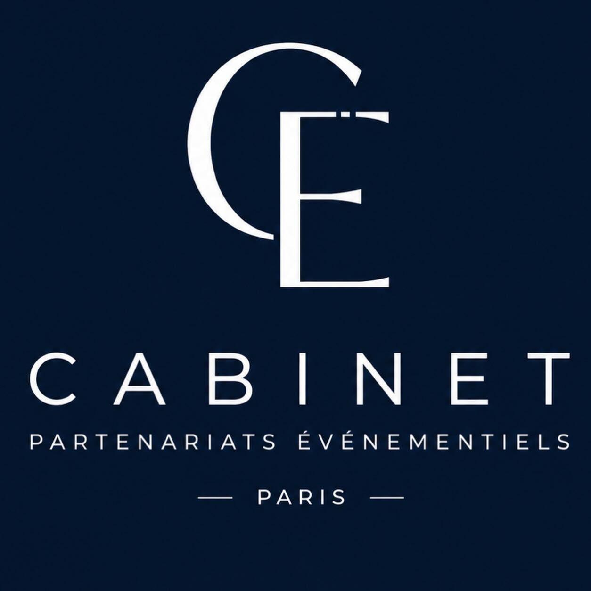
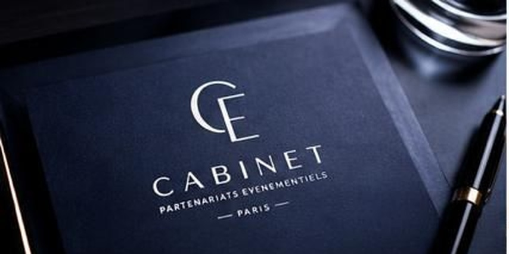
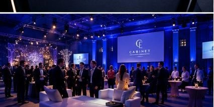
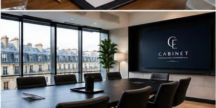

Cabinet parisien de développement, synergies et partenariats
Fondé à Paris, SYNERA intervient dans la conception, le développement et la structuration de projets impliquant des entreprises, des marques, des prestataires, des organisateurs et des acteurs économiques issus d'univers complémentaires.
Le cabinet accompagne des initiatives de nature variée, depuis les opérations événementielles jusqu'au développement de partenariats stratégiques, en passant par l'identification d'opportunités de collaboration et la coordination de projets transverses.
Chaque mission fait l'objet d'une approche sur mesure, fondée sur la compréhension des enjeux, la pertinence des interlocuteurs mobilisés et la cohérence globale du projet.
SYNERA est né d'une conviction simple : les projets les plus ambitieux nécessitent souvent la convergence de compétences, d'expertises et d'acteurs complémentaires.
Le cabinet intervient comme partenaire de réflexion, de coordination et de structuration auprès de ses clients.
Au fil de ses missions, SYNERA a développé des relations professionnelles durables avec des acteurs issus de secteurs variés : événementiel, hôtellerie, lieux de réception, restauration, transport, production, communication, animation, marques, organisateurs de salons, prestataires techniques et services spécialisés.
Cette diversité permet au cabinet d'intervenir sur des projets aux formats et aux ambitions multiples.
Qu'il s'agisse de l'organisation d'un événement, du développement d'un salon professionnel, de la recherche de partenaires, de la création d'expériences sur mesure, de l'identification de prestataires spécifiques ou de la mise en œuvre d'un concept particulier, le cabinet mobilise les ressources adaptées à chaque mission.
Parce que les enjeux diffèrent d'un projet à l'autre, SYNERA privilégie une approche fondée sur la pertinence des interlocuteurs, la qualité de l'exécution et la cohérence globale des collaborations mises en place.
Cette capacité à réunir des expertises complémentaires permet d'apporter des réponses concrètes à des besoins simples comme à des projets plus singuliers.

Le cabinet accompagne des projets nécessitant l'identification de partenaires, la coordination d'intervenants, la création de synergies ou le développement d'opportunités professionnelles.
Chaque intervention repose sur une compréhension approfondie des objectifs poursuivis et sur la mobilisation d'acteurs adaptés aux enjeux du projet concerné.
Identification, structuration et développement de collaborations professionnelles adaptées aux objectifs de chaque projet.

Accompagnement de projets événementiels privés et professionnels, de leur conception à leur mise en œuvre.
Conception et coordination de rencontres favorisant les échanges, les collaborations et les opportunités d'affaires.

Accompagnement de projets en phase de réflexion, de lancement ou de développement.
Les missions confiées à SYNERA peuvent concerner aussi bien des opérations ponctuelles que des projets de développement nécessitant un accompagnement dans la durée.
La flexibilité du cabinet lui permet d'intervenir auprès d'entreprises, de marques, d'organisateurs, de prestataires ou de porteurs de projets recherchant une expertise de coordination, de développement ou de mise en relation.
Chaque mission confiée à SYNERA fait l'objet d'un suivi dédié et d'une mobilisation adaptée à ses enjeux.
Selon la nature du projet, le cabinet coordonne les différents intervenants nécessaires à sa réalisation et assure les démarches de prospection, de recherche, de mise en relation, de négociation et de suivi auprès des partenaires concernés.
Cette organisation permet à ses clients de se concentrer pleinement sur le développement de leur activité tout en bénéficiant d'un accompagnement structuré et d'un pilotage rigoureux des actions engagées.
De l'identification des opportunités à leur concrétisation, SYNERA assure le suivi des démarches nécessaires à l'avancement des projets qui lui sont confiés.
Chaque mission est suivie avec la même exigence, qu'il s'agisse d'un besoin ponctuel, d'une opération spécifique ou d'un projet nécessitant un accompagnement plus global.
Cette implication permet au cabinet d'assurer une continuité dans les échanges, une cohérence dans les actions engagées et une meilleure fluidité dans la coordination des différents acteurs mobilisés.
Chaque projet possède ses propres enjeux.
Chaque collaboration répond à des objectifs spécifiques.
Le rôle du cabinet consiste à réunir les expertises, les partenaires et les ressources nécessaires à la bonne conduite des missions qui lui sont confiées.
Cette approche permet d'intervenir sur des projets de tailles et de secteurs variés tout en conservant une exigence constante dans leur exécution.
Parce que chaque situation est différente, SYNERA privilégie une analyse approfondie des besoins avant toute mise en relation ou recommandation.
L'objectif n'est pas de multiplier les contacts mais d'identifier les interlocuteurs les plus pertinents au regard des ambitions du projet concerné.
Cette méthodologie permet de construire des collaborations cohérentes, durables et adaptées aux réalités opérationnelles de chaque mission.
Chaque mission débute par une phase d'analyse permettant d'identifier les enjeux, les objectifs et les besoins spécifiques du projet.
Cette première étape permet de définir un cadre de travail clair et de déterminer les ressources nécessaires à sa bonne réalisation.
Le cabinet procède ensuite à l'identification des interlocuteurs, partenaires ou prestataires susceptibles d'apporter une réelle valeur ajoutée au projet.
Lorsque cela est nécessaire, SYNERA assure la coordination des échanges, l'organisation des mises en relation, le suivi des discussions et l'accompagnement des différentes parties dans la mise en œuvre des actions envisagées.
Cette approche favorise la fluidité des collaborations, la cohérence des décisions prises et l'efficacité des actions engagées.
De la réflexion initiale jusqu'à la concrétisation des opportunités identifiées, le cabinet veille à assurer un accompagnement structuré et adapté aux objectifs de ses clients.
Implanté dans le 17ᵉ arrondissement de Paris, SYNERA évolue au sein d'un environnement où se rencontrent entreprises, marques, institutions, prestataires et organisateurs.
Cette proximité favorise une compréhension fine des enjeux du marché et une capacité d'intervention adaptée à des projets d'envergures diverses.
Paris constitue un carrefour économique majeur où se développent chaque année de nouvelles opportunités de collaboration, de croissance et de développement.
Cette implantation permet au cabinet de rester au plus près des acteurs qui participent à la dynamique des projets accompagnés.
La proximité avec les entreprises, les organisateurs, les marques et les décideurs favorise une réactivité et une capacité d'action adaptées aux besoins de chaque mission.
📍 Avenue de Wagram
75017 Paris • France
SYNERA
Cabinet parisien de développement, synergies et partenariats
Pour toute demande d'information...
Pour toute demande d'information, projet de développement, recherche de partenaires ou opportunité de collaboration, le cabinet est disponible pour étudier les besoins et envisager les modalités d'accompagnement les plus adaptées.Chaque prise de contact fait l'objet d'un échange confidentiel permettant d'identifier les objectifs du projet et les perspectives de collaboration envisageables.
✉ cabinetsyneraparis@gmail.com
☎ 06 36 39 78 56
📍 Avenue de Wagram
75017 Paris